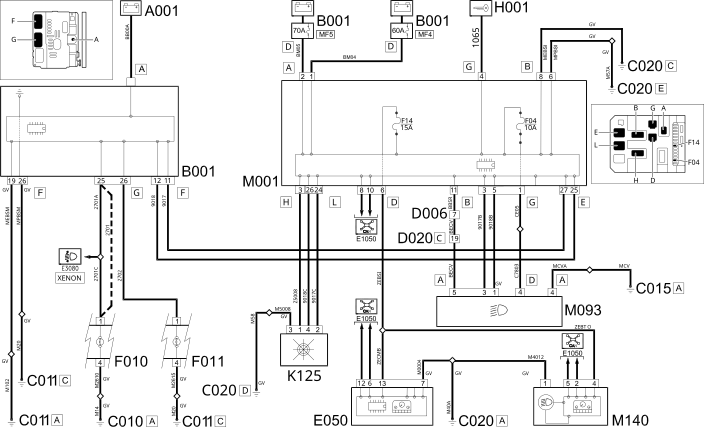

E2011 DIPPED HEADLIGHTS WIRING DIAGRAM
- Path
- Electrical equipment > 1 ELECTRICAL FUNCTIONS > E20 EXTERIOR LIGHTING > E2011 DIPPED HEADLAMPS > E2011 DIPPED HEADLIGHTS WIRING DIAGRAM
- Kind
- topic
- Applies to
- engines: 2.0 16V JTD, 2.2 16V JTD; all production periods; only with equipment: MY 2005
- Interactive page
- https://sloeber94.github.io/elrnDB-fUlss/en/#/179008164
Applies to: engines: 2.0 16V JTD, 2.2 16V JTD; all production periods; only with equipment: MY 2005

Components
Component code | Description | Reference to the assembly |
|---|---|---|
BATTERY | - | |
ENGINE COMPARTMENT JUNCTION UNIT | 5,505A | |
LEFT FRONT EARTH | - | |
RIGHT FRONT EARTH | - | |
DRIVER'S DASHBOARD EARTH | - | |
PASSENGER SIDE DASHBOARD EARTH | - | |
FRONT/REAR COUPLING | - | |
DASHBOARD/REAR COUPLING | - | |
INSTRUMENT PANEL | ||
LEFT HEADLAMP | ||
RIGHT HEADLAMP | ||
Ignition switch | ||
RAIN AND DUSK SENSOR | ||
BODY COMPUTER | ||
STEERING WHEEL NODE CONTROL UNIT (NVO) | ||
WARNING LIGHTS AND MILOMETER CONTROL UNIT (NSO) | - |
Topics linked from this page (22)
- 5010D AIR TEMPERATURE RECORDING SYSTEM
- 5505A MULTI-FUNCTION COMPONENTS
- 5520A IGNITION SWITCH
- 5540B HEADLAMPS
- 5550A STALK UNIT
- 5560B ANALOGUE CONTROL PANEL
- A001 BATTERY
- B001 ENGINE COMPARTMENT JUNCTION UNIT
- C010 LEFT FRONT EARTH
- C011 RIGHT FRONT EARTH
- C015 DRIVER'S DASHBOARD EARTH
- C020 PASSENGER SIDE DASHBOARD EARTH
- D006 FRONT/REAR COUPLING
- D020 DASHBOARD/REAR COUPLING
- E050 INSTRUMENT PANEL
- F010 LEFT HEADLAMP
- F011 RIGHT HEADLAMP
- H001 Ignition switch
- K125 RAIN AND DUSK SENSOR
- M001 BODY COMPUTER
- M093 STEERING WHEEL NODE CONTROL UNIT (NVO)
- M140 WARNING LIGHTS AND MILOMETER CONTROL UNIT (NSO)